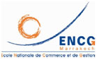
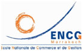

Comités
Comité Scientifique (Provisoire)
- Mohamed ABDELLAOUI (FSJES, Fès)
- Abdallah ALAOUI (Université de Clermont Ferrand)
- Belkacem AMAMOU (FSJES Oujda)
- Abdelmajid AMINE (Université de Paris XII)
- Hammou AZOUZOU (FSJES Marrakech)
- M'Barek BENCHANAA (ENCG Marrakech)
- Mohammed BENMOUSSA (FSJES Marrakech)
- Chafik BENTALEB (ENCG Marrakech)
- Luc BOYER (Université Paris Dauphine & CNAM)
- Sonia CAPELLI (Université de Clermont Ferrand)
- Farid CHAOUKI (FSJES Marrakech)
- Jacques COLIN (Université de la Méditerrané, Aix-Marseille)
- Françoise DEBRY (Université de Nanterre)
- Ahmed GRAR (FSJES Marrakech)
- Gérard HIRIGOYEN (Université de Bordeaux Montesquieu)
- Abdelmajid IBENRISSOUL (ENCG, Casablanca)
- Jacques IGALENS (IAE de Toulouse)
- Abdenbi LOUITRI (FSJES Marrakech)
- Nicholas MOUMNI (Université Jules Vernes D'Amiens)
- Gérald NARO (Université Montpellier 1)
- Said OUHADI (ENCG Marrakech)
- Jean-Claude PACITTO (Université Paris XII)
- Mohamadi RACHDI EL YACOUBI (FSJES Marrakech)
- Sidi Mohamed RIGAR (FSJES Marrakech)
- Aline SCOUARNEC (IAE de Caen & ESSEC)
- Mohammed Larbi SIDMOU (FSJES Marrakech)
- Philippe TROUVE (Université de Clermont Ferrand)
Comité d'organisation (Provisoire)
- Abdenbi LOUITRI (GREFSO)
- Abdelghani BELAKOUIRI (GREFSO)
- Sara BENTEBBAA (GREFSO)
- Ahmed SABBARI (GREFSO)
- Farouk NASSIRI (GREFSO)
- Mustapha ZAHIR (GREFSO)
- Sidi Mohamed RIGAR (GREMID)
- Youssouf MEITE (GREMID)
- Kamal WAANOUL (GREMID)
- Mohammed BENMOUSSA (L-QUALIMAT)
- Smail OUIDDAD (L-QUALIMAT)
- Chafik BENTALEB (GREGO)
- Asmaa FARAH (GREGO)
- Salma SEKKAT (GREGO)
- Farid CHAOUKI (FSJES Marrakech, NPG)
- Mohamadi RACHDI EL YACOUBI (FSJES Marrakech, NPG)
- Amina BENRAISS (FSJES Marrakech, NPG)
- Abderrahman MESSAOUDI (FSJES Marrakech, NPG)


 
